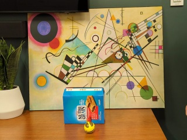

Beyond the visible.
Objects leave our view.
They do not leave the scene.
Inspect physical occlusion, persistent appearance memory, and the moment a tracker must choose between an observation and an uncertain belief.
Three real-scene feasibility cases · Recorded model outputs · Research prototype
Real footage. Physical occluders. The hand, boxes, and mug belong to the recorded scene; no obstruction is painted onto the input.
Follow the object.
Inspect the uncertainty.
One shared frame drives the original video, appearance-memory state, visibility timeline, and the two learned trackers and three controls.
What would the robot remember?
Past accepted positions anchor a motion estimate. During missing visual evidence, compare “stayed where placed” with “continued moving”. Neither branch observes behind the occluder.
Same scene. Different trajectories.
Rendered from the same source frames and released predictions. Switch the scene above for the other two comparisons.
CoTracker3 and CoTracker2 use the archived video prefix through the scored endpoint, including future frames relative to an intermediate view. The template control is causal. These are different information settings, not a claim of online superiority.
Source video stays unoverlaid. Model panels add optional predictions. The frozen template uses only its initial appearance and current frame; its acceptance test can reject a correct candidate.
Observation.
Memory. Verification.
The causal control makes three states inspectable. It preserves the initial appearance, evaluates current evidence, and retains uncertainty when the match is insufficient.

Initial target queryOne annotated starting point and appearance cropNew evidence does not overwrite it.
Mₜ = M₀and best-versus-alternative margin
s ≥ 0.75 ∧ Δ ≥ 0.06This is the implemented classical control, not a novel trained architecture. The initial query is supplied; hidden positions are not recovered by drawing a trajectory through an occluder.
A location can be right.
The decision can still fail.
Three annotated visible endpoints expose the difference between locating the target and accepting that location as visible.
Localization is not
reliable reacquisition.
The template candidate lands inside all three endpoint masks, but fails its acceptance test every time. CoTracker3 also separates coordinate accuracy from predicted visibility.
These are three selected feasibility clips with sparse endpoint annotations. No dense hidden-location accuracy, benchmark ranking, or novelty claim follows from this table.
When does new evidence
justify an old belief?
Persistent memory is useful only if it can distinguish true reappearance from a convincing distractor. The next scientific step is a tested association mechanism with calibrated uncertainty—not a more confident animation.
Research direction · not an implemented resultSeparate audio–visual studies: measured failures, edited-pair controls, and corruption stress tests
See the locked external comparison below.
A clear face can still be the wrong evidence.
A conversational robot should distinguish the person speaking from a listener reacting nearby. Image quality alone cannot tell it whose expression belongs to the voice.
These three queries were chosen by a fixed filename hash without consulting outcomes. Donor playback is retimed to the audio duration for side-by-side inspection. Models use original uniformly sampled visual features; the output labels are measured whole-clip predictions, not live dialogue. The reference-memory control receives extra enrollment information and is not an equal-information comparison.
All 528 query clips · both expert checkpoints released
Intervals in the downloadable results resample 12 disjoint actor dyads, retaining shared donor and reference dependencies. This follow-up is exploratory and does not replace the locked primary test.
The research question worth pursuing
Can a persistent, uncertainty-aware speaker memory assign each visual observation to the right conversational participant, keep that assignment through disappearance, and request clarification when the evidence is ambiguous? This release tests a simple enrollment control. It does not yet implement or validate that full architecture.
Relevant established baselines include TalkNet and Target Speaker TalkNet. They have not been executed here; speaker attribution itself is not claimed as a new task.
One clip. Competing decisions.
Examples are deterministic selections within displayed outcome categories. They illustrate behavior; the complete result tables contain all evaluated clips.
Observed video
Real source, with selected input transformAudio-only reference
Same audio in every visual conditionRouting decision
Frozen clip-level inferencePredictions use eight sampled frames and the full audio clip. Playback and scrubbing inspect the evidence; displayed scores are clip-level and do not pretend to update frame by frame. The occluder is constructed, not naturally occurring.
Each point comes from a separate model inference on the transformed input, not interpolation or a simulated accuracy improvement.
Measure evidence. Estimate gain. Permit abstention.
Frozen audio, fusion, and video expert outputs; eight real frames per clip.
Temporal feature consistency, mild crop stability, and central image statistics.
Direct gain and rescue/neutral/harm controls receive the same information as structured heads.
Switch only on positive scores. Compare batch limits, fixed thresholds, and a training-derived visual-support gate.
A support gate is an empirical reliability heuristic. It is distinct from the finite-region certificate, which is too conservative to certify any switches with nine calibration actors.
Primary external results
Accuracy and gains are actor-uniform. Primary operating point: clean-trained fixed threshold targeting 20% changes on tuning actors. The actual external change rate can differ.
Inspect the complete record.
The separate audio–visual routing study failed its primary comparison. Its report and full results remain available alongside the scene-native pilot.